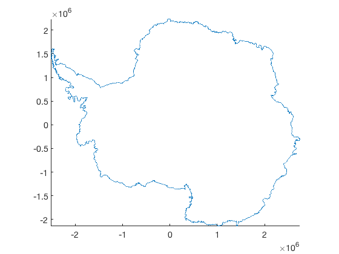
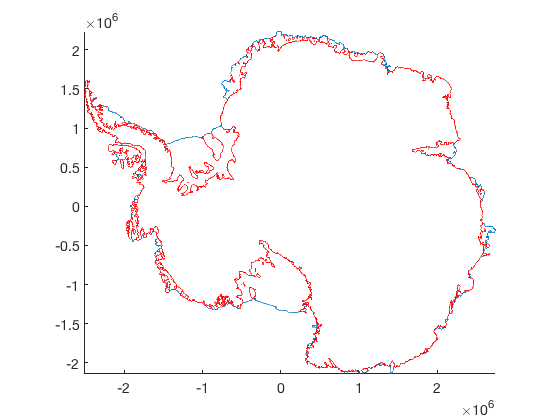
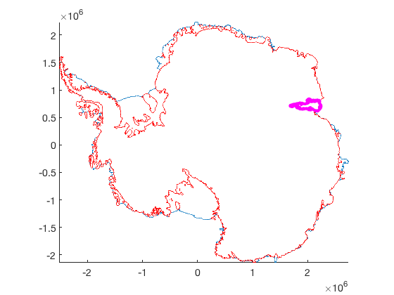
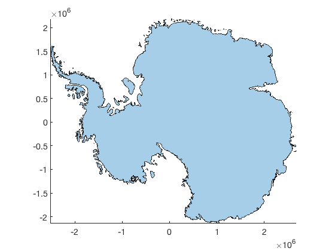
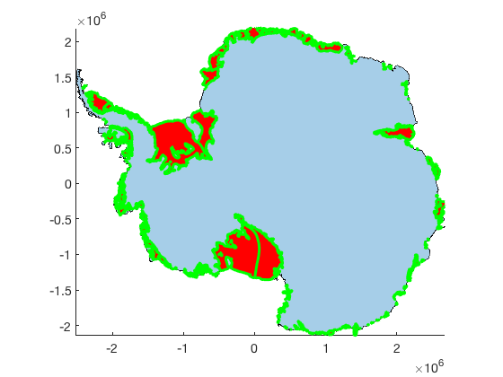

antbounds documentation
The antbounds function plots line data from the line data in the MEaSURES Antarctic Boundaries for IPY 2007-2009 from Satellite Radar dataset Version 2.
The Antarctic Boundaries dataset is described on the NSIDC site here. An overview of the tools in this AMT plugin can be found here.
Contents
Syntax
antbounds antbounds(datatype) antbounds(datatype,PropertyName,PropertyValue,...) antbounds(...,'polyshape') antbounds(...,'km') h = antbounds(...)
Description
antbounds without any inputs plots grounded and floating ice shelves as gray polygons. (Requires Matlab R2017b or later.)
antbounds(datatype) plots any of the following datatypes:
- 'coast' seaward limit of the ice sheet
- 'gl' landward limit of flexure detected by InSAR
- 'shelves' a cell array of all ice 180 ice shelves in the dataset
- 'shelfname' any of the shelf names in the dataset, must be exactly one of the following:
'Abbot' 'Getz 1' 'Porter'
'Abbot 1' 'Getz 2' 'PourquoiPas'
'Abbot 2' 'Gillet' 'Prince Harald'
'Abbot 3' 'Hamilton' 'Publications'
'Abbot 4' 'Hamilton Piedmont' 'Quar'
'Abbot 5' 'Hannan' 'Quatermain Point'
'Abbot 6' 'HarbordGlacier' 'Rayner Thyer'
'Ainsworth' 'Harmon Bay' 'Rennick'
'Alison' 'Hayes Coats Coast' 'Richter'
'Amery' 'Helen' 'Riiser-Larsen'
'Andreyev' 'Holmes' 'Ronne'
'Arneb' 'Holt' 'Rose Point'
'Astrolabe' 'HornBluff' 'Ross East'
'Atka' 'Hoseason' 'Ross West'
'Aviator' 'Hovde' 'Rund Bay'
'Bach' 'Hull' 'Rydberg Peninsula 1'
'Barber' 'Hummer Point' 'Rydberg Peninsula 2'
'Baudouin' 'Ironside' 'Sandford'
'Borchgrevink' 'Jackson' 'Shackleton'
'Brahms' 'Jelbart' 'Shirase'
'Britten' 'Kirkby' 'Skallen'
'Brunt Stancomb' 'Land' 'Slava'
'Campbell' 'LarsenA' 'SmithInlet'
'CapeWashington' 'LarsenB' 'Sorsdal'
'Cheetham' 'LarsenC' 'Stange'
'Chugunov' 'LarsenD' 'Sulzberger'
'Cirque Fjord' 'LarsenD 1' 'Suter'
'ClarkeBay' 'LarsenE' 'Suvorov'
'Commandant Charcot' 'LarsenF' 'Swinburne'
'Conger Glenzer' 'LarsenG' 'Telen'
'Cook' 'Lauritzen' 'Thomson'
'Cosgrove' 'Lazarev' 'Thwaites'
'Crosson' 'Lillie' 'Tinker'
'Dalk' 'Liotard' 'Totten'
'Dawson Lambton' 'Mandible Cirque' 'Tracy Tremenchus'
'Deakin' 'Manhaul' 'Tucker'
'Dennistoun' 'Marin' 'Underwood'
'Dibble' 'Mariner' 'Utsikkar'
'Dotson' 'Marret' 'Venable'
'Drury' 'Matusevitch' 'Verdi'
'Drygalski' 'May Glacier' 'Vigrid'
'Edward VIII' 'McLeod' 'Vincennes Bay'
'Ekstrom' 'Mendelssohn' 'Voyeykov'
'Eltanin Bay' 'Mertz' 'Walgreen Coast 1'
'Erebus' 'Morse' 'Walgreen Coast 2'
'Falkner' 'Moscow University' 'WattBay'
'Ferrigno' 'Moubray' 'West'
'Filchner' 'Mulebreen' 'Whittle'
'Fimbul' 'Myers' 'Wilkins'
'Fisher' 'Nansen' 'Williamson'
'Fitzgerald' 'Nickerson' 'WilmaRobertDowner'
'Flatnes' 'Fox Glacier' 'Ninnis' 'Withrow'
'Fox Ice Stream' 'Nivl' 'Wordie (Airy Rotz Seller)'
'Francais' 'Noll' 'Wordie (Cape Jeremy)'
'Frost' 'Nordenskjold' 'Wordie (Harriott)'
'Gannutz' 'Parker' 'Wordie (Harriott Headland)'
'Garfield' 'Paternostro' 'Wordie (Prospect)'
'GeikieInlet' 'Perkins' 'Wylde'
'George VI' 'Philbin Inlet' 'Zelee'
'Getz' 'Pine Island' 'Zubchatyy'antbounds(datatype,PropertyName,PropertyValue,...) formats the line properties with linewidth, color, etc.
antbounds(...,'polyshape') plots the grounding line, coast line, or ice shelves as polyshape objects rather than as line objects. This option requires Matlab version R2017b or newer. Polyshape properties are equivalent to patch or fill properties (e.g., FaceColor, EdgeColor, FaceAlpha, etc.)
antbounds(...,'km') plots in polar stereographic kilometers rather than meters.
h = antbounds(...) returns a handle h of the plotted object(s)
Line Examples
Plot a coastline like this:
antbounds('coast')
 Overlay a red grounding line like this:
antbounds('gl','color','r')
Outline Amery Ice Shelf with a fat magenta line like this:
antbounds('amery','m','linewidth',4)
Polyshape Examples
If you have Matlab R2017b or newer, you can fill in the outlines of the grounding line, coast line, or ice shelves using the 'polyshape' feature. The default polyshape formatting is typically a semitransparent blue:
figure antbounds('gl','polyshape')
If you'd like to plot opaque red ice shelves with thick green outlines, try this:
antbounds('shelves','polyshape',... 'facecolor','r',... 'facealpha',1,... 'linewidth',3,... 'edgecolor','g')
Citing this dataset
If you use this dataset, please cite the following:
- The dataset: Mouginot, J., B. Scheuchl, and E. Rignot. 2017. MEaSUREs Antarctic Boundaries for IPY 2007-2009 from Satellite Radar, Version 2. [Indicate subset used]. Boulder, Colorado USA. NASA National Snow and Ice Data Center Distributed Active Archive Center. http://dx.doi.org/10.5067/AXE4121732AD.
- Literature citation: Rignot, E., S. S. Jacobs, J. Mouginot, and B. Scheuchl. 2013. Ice-shelf melting around Antarctica, Science. 341. 266-270. http://dx.doi.org/10.1126/science.1235798.
- Antarctic Mapping Tools: Greene, C. A., Gwyther, D. E., & Blankenship, D. D. Antarctic Mapping Tools for Matlab. Computers & Geosciences. 104 (2017) pp.151-157. doi:10.1016/j.cageo.2016.08.003.
Author Info
This function and supporting documentation were written by Chad A. Greene of the University of Texas Institute for Geophysics (UTIG), November 2016. Updated May 2017 and May 2018.